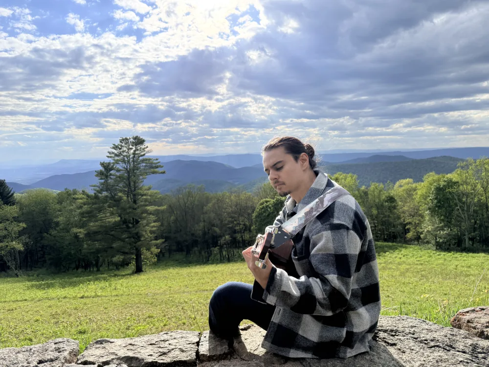
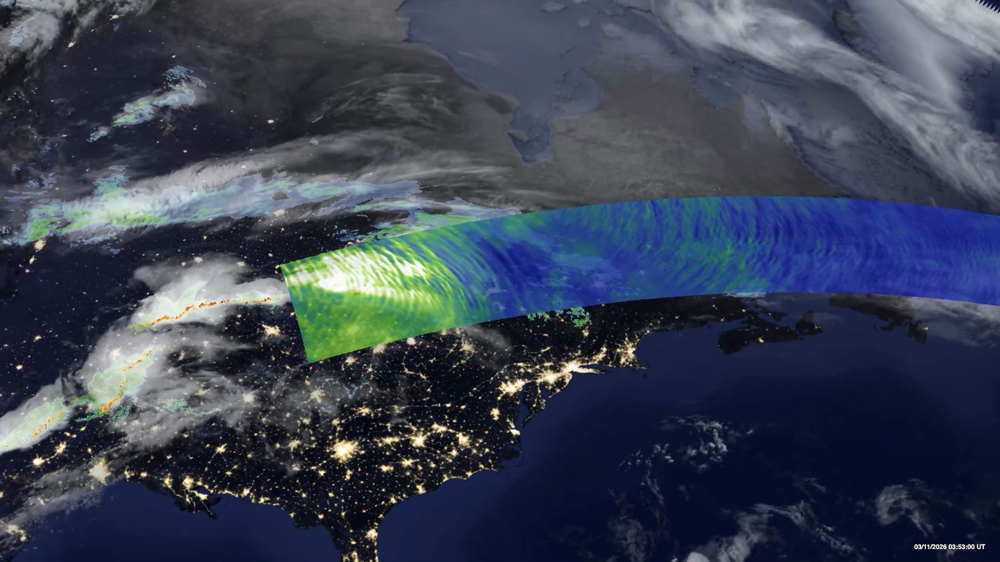
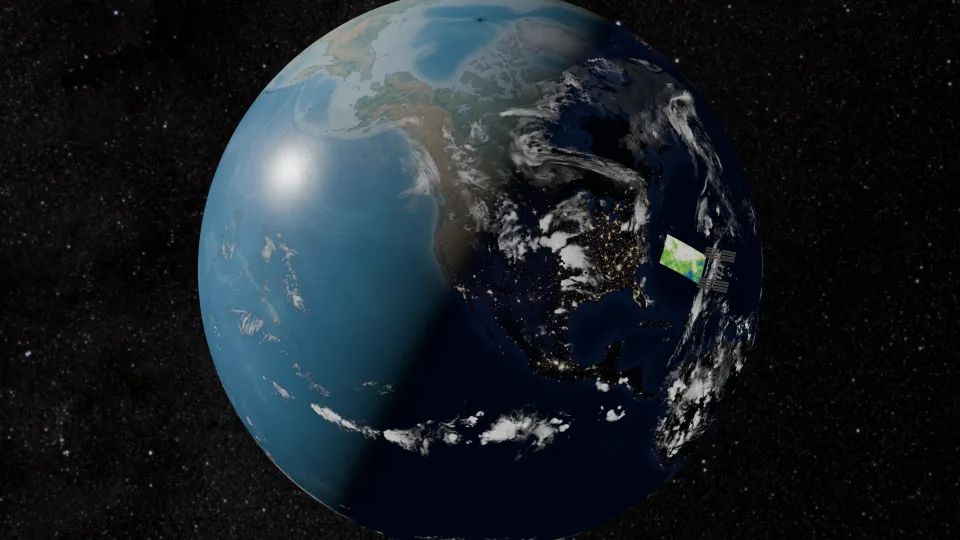
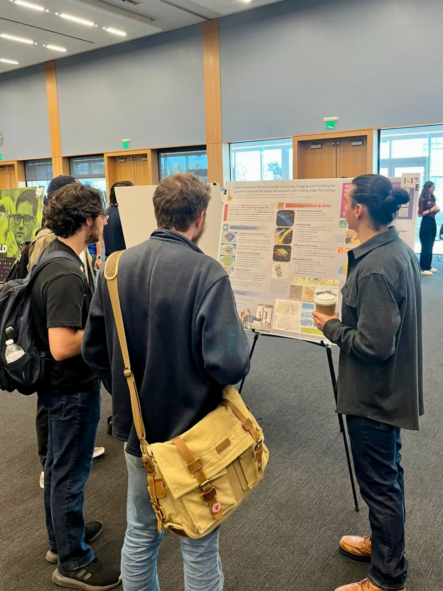
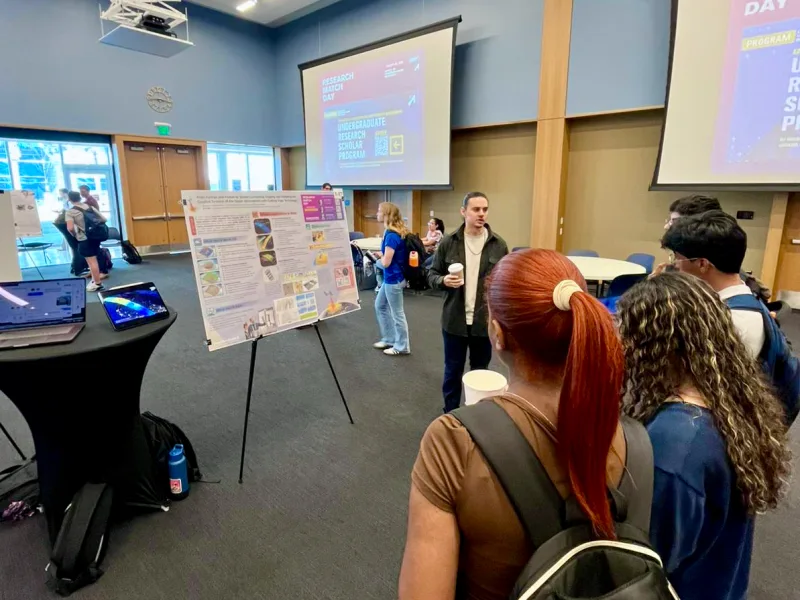
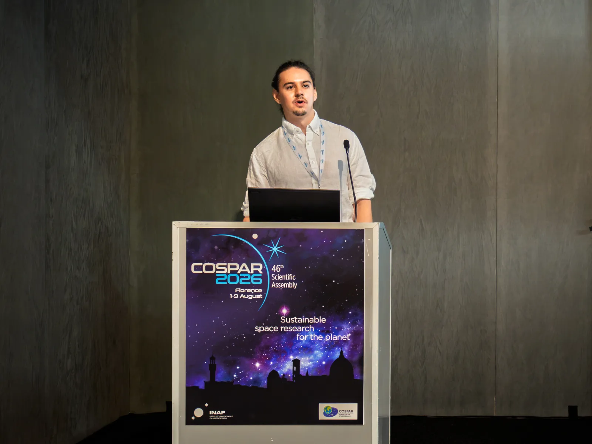
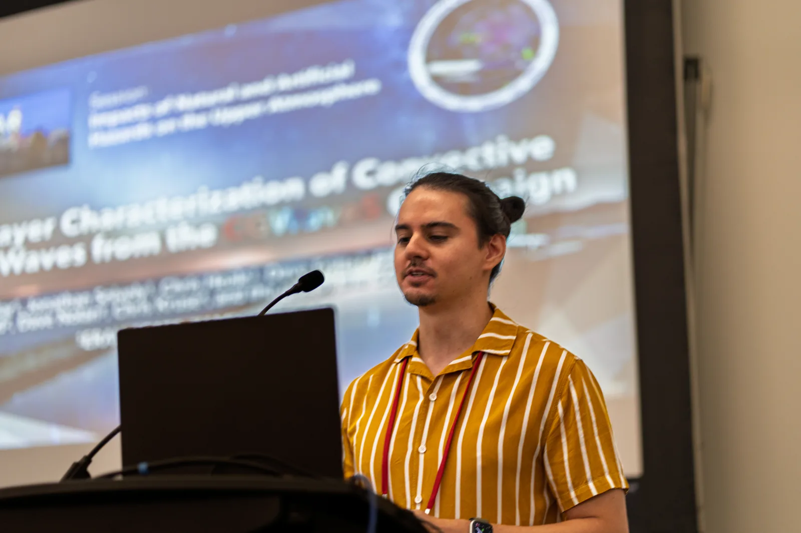
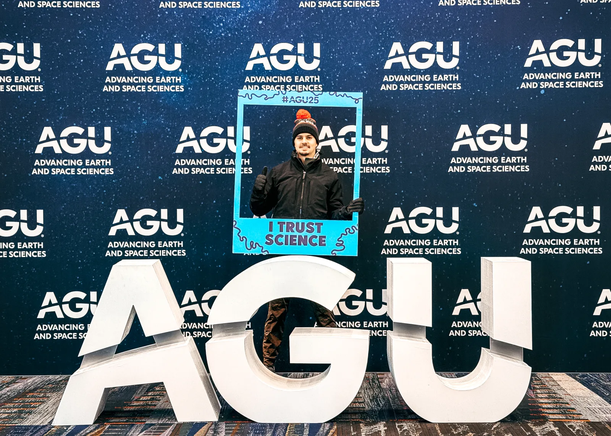
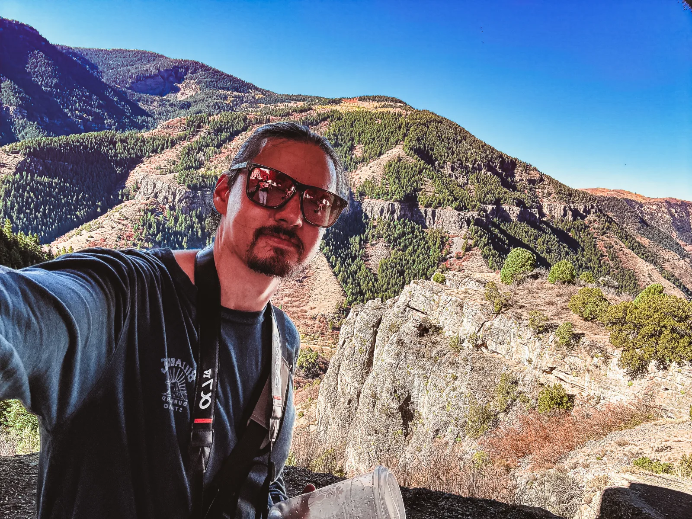
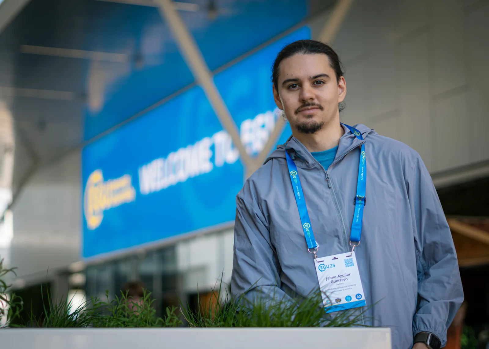

Jaime Aguilar Guerrero
Research Scientist · Center for Space and Atmospheric Research
Embry-Riddle Aeronautical University, Daytona Beach, FL
Research in atmospheric coupling
and dynamics.



About
I study atmospheric gravity and acoustic waves and their role in coupling the lower atmosphere, upper atmosphere, and ionosphere.
I am a Research Scientist in Embry-Riddle’s Center for Space and Atmospheric Research (CSAR).
Research expertise
The work combines numerical simulations with satellite observations, ground-based airglow imaging, and Global Navigation Satellite System (GNSS) total electron content (TEC) measurements. Geodetic transformations, spectral analysis, and synthetic observations support comparisons across instruments, spatial scales, and atmospheric regions.
Research methods and datasetsAWE · Atmospheric Waves Experiment
As principal investigator for Embry-Riddle’s student collaboration on NASA’s Atmospheric Waves Experiment (AWE), I guide student work on numerical simulations and comparisons between AWE observations and GNSS TEC measurements.
The studies examine gravity waves associated with convection and compare mesospheric observations with ionospheric disturbances. Weather observations and atmospheric models provide information on the sources and propagation conditions.
AWE visualization gallery at USUMITIGATE
I serve as project manager for MITIGATE, an Office of Naval Research (ONR) MURI project involving Embry-Riddle, Arizona State, Boise State, Boston University, and the University of Miami.
The project combines observations and atmospheric and ionospheric modeling to study gravity waves generated by severe weather. Its objectives are to characterize their propagation and ionospheric effects and improve forecasts of disturbances affecting radio communication and navigation.
MITIGATE announcementAtmoSense / AIRWaveS
I previously served as project manager for AIRWaveS, part of DARPA’s Atmosphere as a Sensor (AtmoSense) program.
AtmoSense investigated whether atmospheric and ionospheric signatures could be used to detect and characterize transient events such as earthquakes, volcanic eruptions, and storms. AIRWaveS used source-to-sensor numerical simulations and field measurements to assess signal detectability and compare modeled and observed responses.
AIRWaveS projectAtmoSense programResearch & visualization
Studies of wave sources, propagation, and atmospheric and ionospheric responses using observations and numerical models.
Wave sources, modeling, and analysis
Sources and atmospheric coupling
Studies examine gravity waves generated by convection and topography, their propagation, and the associated upper-atmospheric and ionospheric responses. Weather observations, atmospheric background conditions, and wave measurements are compared to identify tropospheric sources and assess propagation. Related work examines acoustic waves generated by earthquakes and their signatures in airglow and TEC measurements.
Numerical simulations and observational comparisons
Numerical simulations are compared with AWE and Atmospheric Infrared Sounder (AIRS) observations, ground-based airglow images, and GNSS TEC measurements. Synthetic observations account for viewing geometry, line-of-sight integration, and instrument sensitivity when comparing modeled fields with measurements. This work also draws on experience with satellite orbit determination and attitude analysis.
Characterization of atmospheric gravity waves
Geodetic transformations place observations and model output in consistent coordinate systems. Spectral analyses estimate wave periods, wavelengths, and propagation directions. Comparisons across instruments, spatial and temporal scales, and atmospheric regions are used to examine source associations and propagation. ERA5 and MERRA-2 reanalyses, along with NAVGEM and WACCM-X model products, provide background conditions for interpreting wave propagation.
3D visualization and extended reality
3D visualizations show observations and simulation output at their geographic locations and altitudes. They are used to inspect wave structure, compare datasets, and present results.

Featured visualization
AWE in three dimensions
The USU gallery contains 3D scenes and videos of AWE observations with weather context. The March 2026 case shown here includes the AWE swath, GOES imagery, and NEXRAD/MRMS radar data.
Open the USU gallery awe.physics.usu.eduExtended reality (XR)

The 3D model could not load. View the visualization in the USU gallery.
I work with 3D creation software and real-time engines, including Blender, Unity, and Unreal Engine, to prepare data, edit scenes, and distribute them across platforms. Scenes contain georeferenced observations and volumetric simulation output. XR experience includes viewing and interacting with scientific data on Apple Vision Pro and augmented reality headsets.
Eos article on XR in Earth and space scienceStudent mentoring
Undergraduate training in scientific programming, data analysis, and 3D visualization.
Mentoring covers MATLAB, Python, and Blender for atmospheric research. Students work with observations and simulation output, apply spectral analyses, and prepare 3D visualizations of atmospheric structure.
I help students develop analysis code, interpret results, and document the assumptions behind calculations and visualizations. Projects emphasize comparisons between atmospheric layers and between simulated and observed quantities.


Eos · Science News by AGU 10 July 2026
Extended Reality Offers Opportunities for Scientific Show-and-Tell
A coauthored article on extended reality for analyzing and communicating Earth and space science data.
Read the article in Eos
Selected publications
ORCID- Publication
Three-Dimensional Numerical Modeling of Coseismic Atmospheric Dynamics and Ionospheric Responses in Slant Total Electron Content Observations
Inchin et al. · Geophysical Research Letters, 51(21), e2023GL108068
- Publication
Simulation of Infrasonic Acoustic Wave Imprints on Airglow Layers During the 2016 M7.8 Kaikoura Earthquake
Inchin et al. · Journal of Geophysical Research: Space Physics, 127(3), e2021JA029529
- Publication
Mesopause Airglow Disturbances Driven by Nonlinear Infrasonic Acoustic Waves Generated by Large Earthquakes
Inchin et al. · Journal of Geophysical Research: Space Physics, 125(6), e2019JA027628
Conferences & presentations
Conference presentations and science-team meetings.

COSPAR 2026 · · Florence, Italy
Synthetic Multi-Instrument Forward Modeling for Convectively Driven AGW in MAGIC, GEMINI, and FIGMENTS
Session C0.2 Advances in Remote Sensing of the Middle and Upper Atmospheres and Ionosphere from the Ground and from Space, including Sounding Rockets, Novel Radar and Multi-instrument Studies
Comparing synthetic observations of convectively driven atmospheric gravity waves across numerical models.
Read conference abstract ↗ · Session program ↗
CEDAR 2026 · · Des Moines, Iowa, USA
Multi-layer Characterization of Convective Gravity Waves from the CGWaveS Campaign, AWE, and GNSS
Session Impacts of Natural and Artificial Hazards on the Upper Atmosphere
Comparison of CGWaveS campaign observations, AWE measurements, and GNSS TEC data for convectively generated gravity waves.
Presentation program ↗
AGU 2025 · New Orleans, Louisiana, USA
Multi-instrument Synoptic Characterization of Deep Convective Events and Associated Gravity Wave Responses Over CONUS Using AWE, AIRS, TEC, and LLITED
Session SA013 Gravity Waves, From the Surface to the Edge of Space
Official AGU25 session listing ↗
AWE Science Team Meeting · October 6–10, 2025 · Logan, Utah, USA
Science-team hike at the 8th AWE Science Team Meeting
8th AWE Science Team Meeting Jointly held with the 7th ANGWIN Workshop at Utah State University
Presented an update on the AWE student collaboration and a multi-instrument study of a deep convective event. Photograph from the science-team hike during the joint AWE–ANGWIN meeting.

EGU 2025 · · Vienna, Austria
Observing Mesospheric Gravity Waves with NASA’s AWE Mission and Correlating to GNSS TEC Maps
Session ST3.3 Dynamics, Chemistry, and Coupling in the Middle Atmosphere and MLT Regions
Comparison of mesospheric AWE observations with GNSS TEC maps to examine gravity-wave signatures and associated ionospheric disturbances.
Read conference abstract ↗ · Session program ↗Conference photographs © Jaime Aguilar Guerrero.